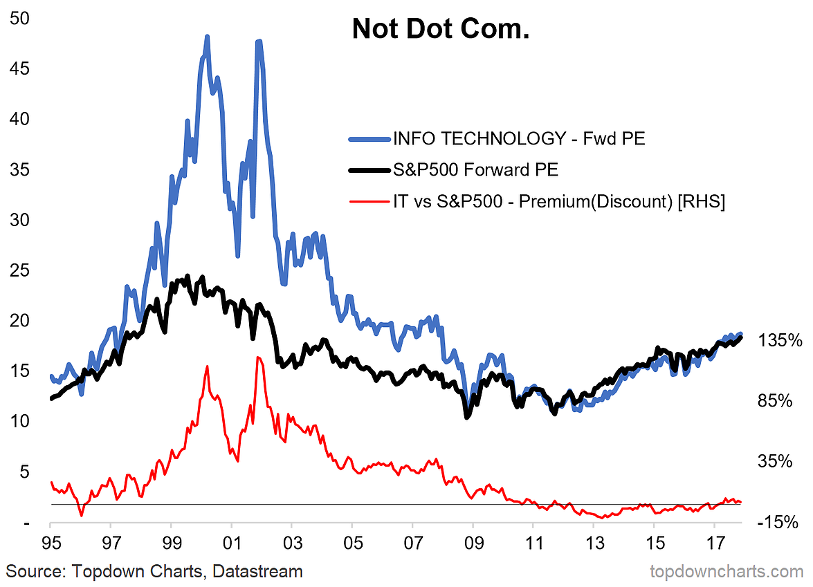

The dotcom bubble, also known as the internet bubble, was a rapid rise in U.S. technology stock equity valuations fueled by investments in internet-based companies during the bull market in the late 1990s. During the dotcom bubble, the value of equity markets grew exponentially, with the technology-dominated Nasdaq index rising from under 1,000 to more than 5,000 between the years 1995 and 2000. In 2001 and through 2002 the bubble burst, with equities entering a bear market. The crash that followed saw the Nasdaq index, which had risen five-fold between 1995 and 2000, tumble from a peak of 5,048.62 on March 10, 2000, to 1,139.90 on Oct 4, 2002, a 76.81% fall. By the end of 2001, most dotcom stocks had gone bust. Even the share prices of blue-chip technology stocks like Cisco, Intel and Oracle lost more than 80% of their value. It would take 15 years for the Nasdaq to regain its dotcom peak, which it did on April 23, 2015.
The dotcom bubble grew out of a combination of the presence of speculative or fad-based investing, the abundance of venture capital funding for startups and the failure of dotcoms to turn a profit. Investors poured money into internet startups during the 1990s in the hope that those companies would one day become profitable, and many investors and venture capitalists abandoned a cautious approach for fear of not being able to cash in on the growing use of the internet. With capital markets throwing money at the sector, start-ups were in a race to get big fast. Companies without any proprietary technology abandoned fiscal responsibility, and spent a fortune on marketing, to establish brands that would differentiate themselves from the competition. Some start-ups spent as much as 90% of their budget on advertising.